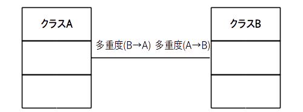
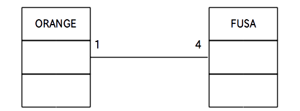

次に「関連: Association」について学びます。
実は「関連」は更に
の 3 つのサブ関係に分かれるのですが、ここではまず「関連」そのものについて説明します。
その後次のページで「集約」について説明します。
なお「コンポジション」と「依存」は今回のアクティビティでは取り扱いませんので、興味のある人は自分で調べて下さい。
さて「関連」は2つ以上のクラスが「何らかの関係」を持っていることを表す用語です。
何らかのと言われても漠然としていて分かりにくいのですが、具体的には
などの関係が「何らかの関係」の例として挙げられます。
この「関連」をクラス図で表す場合はクラス間を「リンク」と呼ばれる線で結び、リンクの上に「多重度」を記述します(図1)。

この例ではクラスAとクラスBの間にリンクが張られていますので、お互いに何らかの関係があるという事が分かります(※)。
また「多重度(A→B)」は A の 1 つのインスタンスから見て B のインスタンスはいくつ関係しているかということを示しています。
※ ただし具体的にどういう関係があるかはこの図だけでは分かりませんので注意が必要です。
ではまた具体的な例を挙げて説明しましょう。
新たに MyWorld というクラスを作ることにし、MyWorld と ORANGE の関係を図 2 に示す関連のクラス図で表すことにします。

さてこのクラス図はリンクをたどる方向によって以下の 2 通りの解釈が可能です。
方向1: MyWorld → ORANGE
この方向の場合は MyWorld からみると ORANGE の多重度が 4 なので「1 つの MyWorld は 4 個の ORANGE と関係がある」という解釈になります。
方向2: ORANGE → MyWorld
この方向の場合は ORANGE からみると MyWorld の多重度が 1 なので「1 個のORANGEは 1 つの MyWorld と関係がある」という解釈になります。